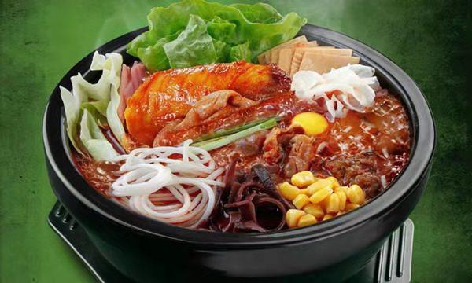
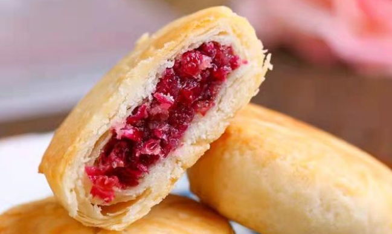
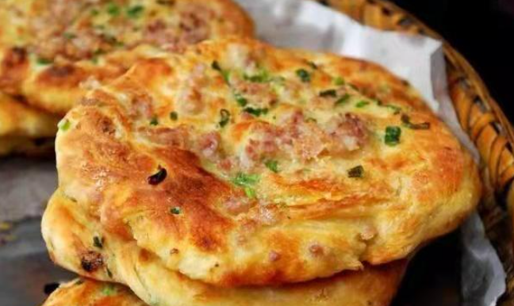
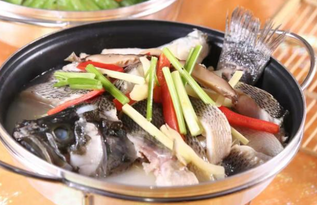

云南美食
-

过桥米线
提到云南的美食，最著名的当然是云南的过桥米线啦！云南过桥米线是云南省滇南地区的一种特有的小吃，米线细白有韧性，骨头汤由鸡、鸭、鹅、排骨、猪筒子骨等熬制而成，佐以配菜，味道非常鲜美，去到云南不吃一碗正宗的过桥米线等于白去一趟呢！
-
宣威火腿
宣威火腿是中国“三大名腿”之一，驰名中外，早在一九一五的国际巴拿马博览会上荣获金质奖，其品质优良，足以代表云南火腿，故常称“云腿”。它形似琵琶、只大骨小、皮薄肉厚、肥瘦适中、香气浓郁、色泽鲜艳，瘦肉呈鲜红色或玫瑰色，肥肉呈乳白色...
-

鲜花饼
提到云南的鲜花饼，相信大家一定不会感到陌生，因为好多小伙伴去云南游玩，首选云南独有的鲜花饼作为伴手礼品。鲜花饼是最具有云南特色的云南经典点心代表，主要以云南特有的食用玫瑰花入料的酥饼，吃起来花香沁心、甜而不腻，而且还具有养颜美容的功效，深受男女老少的喜爱。
-

喜洲粑粑
来到云南大理不得不品尝一下当地的喜洲粑粑，大理喜洲粑粑又名破酥，是一种色、香、味均佳的麦面烤饼，它素有“东方披萨”之称，口味有甜、咸两种，色泽金黄、口感香酥、内在绵软、油而不腻，而且价格亲民，深受大理人民的喜爱！
-

大理砂锅鱼
大理砂锅鱼采用洱海的新鲜鲤鱼搭配着嫩鸡片、火腿、冬菇十多种配料，放置砂锅中小火慢慢炖而成。夹一块入口，鱼肉清香细嫩、鲜美爽滑，汤味美鲜香、酸辣可口、百尝不腻。坐洱海旁吃大理砂锅鱼，真的是人间一大享受。